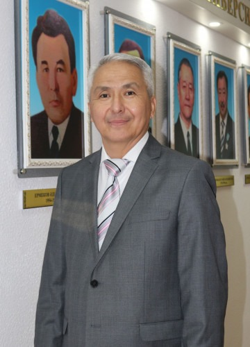
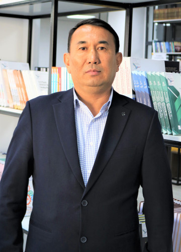
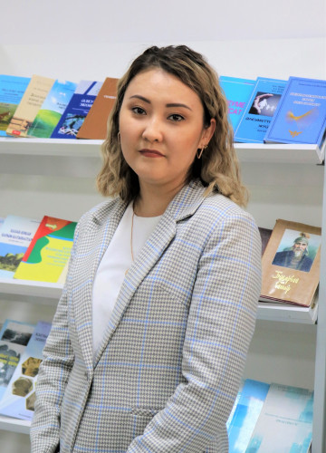

Лауазымы: Жасанды интеллект институтының директоры, экономика ғылымдарының кандидаты
1982 жылы 1 қазанда Қызылорда облысы, Қармақшы ауданында дүниеге келген.
Лауазымы: Институт директорының орынбасары
Email: askhat.te@gmail.com
LinkedIn: https://www.linkedin.com/in/askhatyeltayev/
Қазақ (ана тілі), Ағылшын (еркін), Орыс (еркін).
Лауазымы: Информатика магистрі, аға оқытушы
Email: bota_zhuss@korkyt.kz
2001 жылы Қорқыт Ата атындағы Қызылорда мемлекеттік университетін «Қолданбалы математика» мамандығы бойынша бітірді. 2019-2022 жылдары Қожа Ахмет Ясауи атындағы Халықаралық қазақ-түрік университетінде докторантураны аяқтады.
Методы и модели организации лечебных процессов в медицинских учреждениях Казахстана на основе технологий Big Data.
Лауазымы: Гуманитарлық ғылымдар магистрі, аға оқытушы
Email: zhanbatyr68@gmail.com
Лауазымы: Жаратылыстану ғылымдарының магистрі, аға оқытушы
Email: bota_zharmenova@korkyt.kz
2001 жылы Қорқыт Ата атындағы Қызылорда мемлекеттік университетін «Қолданбалы математика» мамандығы бойынша бітірді. 2013 жылы Жаратылыстану ғылымдарының магистрі академиялық дәрежесін алды.
ЖОО-да биология мұғалімдерін даярлау процесінде экологиялық-педагогикалық құзыреттілікті қалыптастыру.
Лауазымы: Әлеуметтік ғылымдарының магистрі
Email: iiu_1975@korkyt.kz
Еңбек жолын 1996 жылы Ы. Жақаев атындағы Қызылорда политехникалық институтының «Философия және тарих» кафедрасының оқытушысы қызметінен бастады.
«Қазіргі Қазақстан қоғамындағы балаларды тәрбиелеу мәселесі».
Лауазымы: Аға оқытушы, гуманитарлық ғылымдар магистрі
Email: nurramazan@mail.ru
1995 жылдан бері Қорқыт ата атындағы Қызылорда мемлекеттік Университетінде ағылшын тілі пәні оқытушысы.
Ағылшын тілін арнайы кәсіби бағытта оқыту (жаратылыстану терминологиясы).
Лауазымы: Аға оқытушы, PhD
Email: Duysekeyeva@korkyt.kz
Еңбек жолын Қорқыт Ата атындағы Қызылорда мемлекеттік университетінің «Педагогика» кафедрасының оқытушысы қызметінен бастады (2011 ж.).
Болашақ педагог-психологтерде бәсекеге қабілеттілікті дамыту ерекшеліктері.
Оқытушы
Толық ақпарат жақында қосылады.